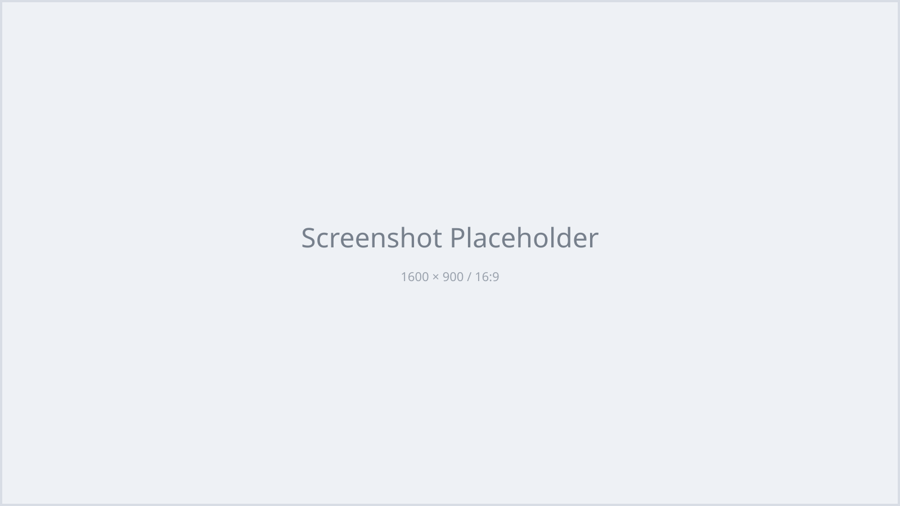

UNOFFICIAL REIMPLEMENTATION · 1.21.1
Manaita++
昔遊んだまな板MODを、今のMinecraftでも。ManaitaPlusのコードを移植するのではなく、懐かしい遊びを1から書き直した非公式の再実装です。
01 / TIERS
2倍から64倍へ。
まな板の素から始まり、素材を集めるほど作業台とかまどの倍率が上がります。薄いのに、仕事量はどんどん厚くなります。
木×2
石×4
鉄×8
金×16
ダイヤ×32
MTK×64
02 / MULTI-LOADER
同じ遊びを、3つの入口へ。
現在の公開対応はMinecraft 1.21.1。Forge・Fabric・NeoForgeそれぞれのAPI差を吸収し、共通の実装をまとめる構成に取り組みました。
Forge1.21.1 対応済み
Fabric1.21.1 対応済み
NeoForge1.21.1 対応済み
03 / DETAILS
懐かしさの裏側。
まな板作業台・かまど、粉、飛行と特殊効果を持つ装備、範囲採掘ツールなどを実装。元MODになかった斧やクワの便利機能も加わっています。
マルチローダー設計について
ゲームロジックの共通部分と、Forge・Fabric・NeoForge固有の登録やイベント処理を分離。ローダーが変わっても同じ機能を保ちやすい構成を目指しています。
対応バージョンについて
リポジトリと配布ページで確認できる対応済みバージョンは1.21.1です。それ以外は未対応または今後の予定であり、対応済みとは記載していません。
